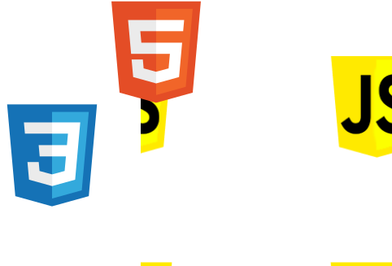
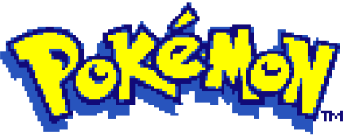

PROJETO DESENVOLVIDO PARA PRATICAR TECNOLOGIAS COMO: HTML, CSS E MANIPULAÇÃO DO DOM COM JAVASCRIPT.


ALÉM DE APRESENTAR UMA LISTA DOS MEUS POKEMONS PREDILETOS,ESTE PROJETO IRÁ EXIBIR SEUS ATRIBUTOS,EVOLUÇÕES E AFINS